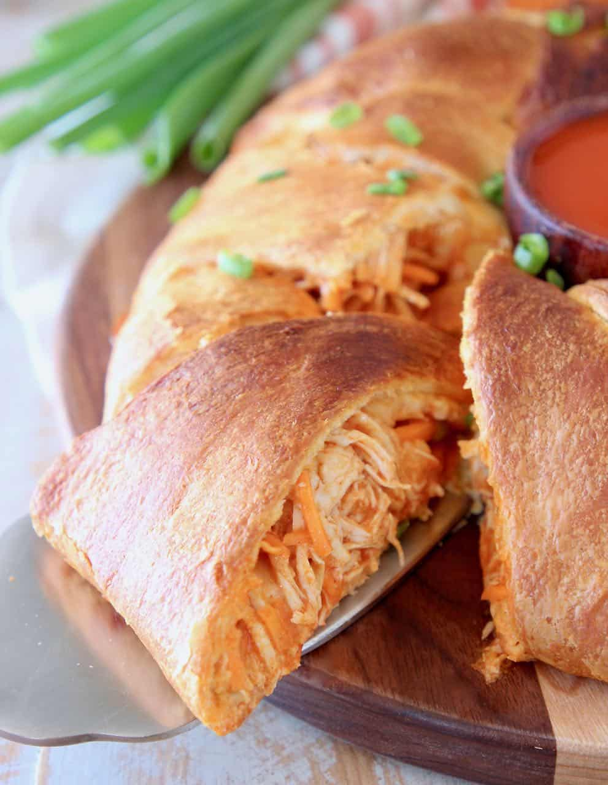

Buffalo Chicken Ring
Description
The Buffalo Chicken Ring is the ultimate party snack, seamlessly fusing the bold flavors of spicy Buffalo chicken with the convenience of a crescent roll ring. This crowd-pleaser not only brings the heat but also boasts a creamy and delightful center.
The shredded chicken, infused with zesty Buffalo sauce, harmonizes with cream cheese and gooey shredded cheese, all enveloped in the golden embrace of flaky crescent roll dough. As it bakes to perfection, the enticing aroma fills the air, making it a visual and flavorful masterpiece.
Garnished with fresh green onions or chives and served warm with a side of ranch or blue cheese dressing, this Buffalo Chicken Ring is destined to be the star of any gathering, disappearing as quickly as it's served.
Ingredients
- 1 pck. of crescent rolls
- 1/2 c. Ranch
- 1 c. Buffalo sauce (Prefer Frank's buffalo wing sauce, use whatever you like.)
- 8 oz. Philadelphia cream cheese
- 1 c. Mozzarella cheese
Steps
- Unpack and unroll your crescent rolls, make sure to split each section so you're left with triangles.
- Put a bowl in the middle of a baking sheet and line each of your triangles around the bowl.
- Shred your chicken.
- Mix the chicken into a bowl with your buffalo, ranch, mozzarella, and cream cheese.
- Line your mixture around the bowl on the cookie sheet
- Cook at 350 degrees for 15-20 minutes.